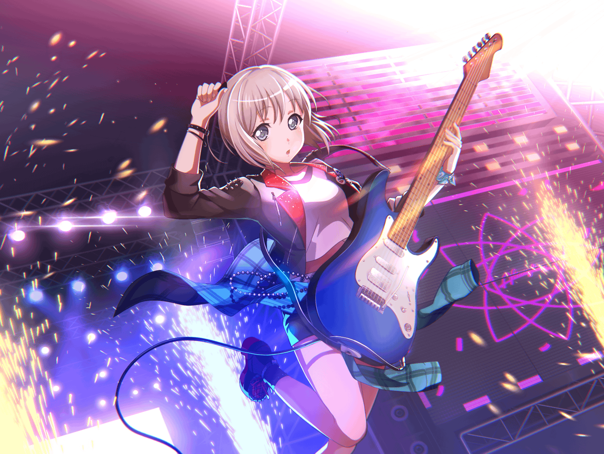

モカ
ふっふっふ～
焼きたてのメロンパンをゲット出来るとは、
今日はなかなかにツイてますな～
モカ
これもモカちゃんの日ごろの行いが……
モカ
あれ？
{{userName}}さんじゃないですか～。
ど～も、こんにちはー
モカ
{{userName}}さんもパンを買いに来たんですか？
ここのパンって、すっごく美味しいですよね～。
あたしも大好きで、よく買いに来るんですよ～
モカ
知ってる？
おお、さすがですねー
モカ
この後、スタジオ練なんですけど、
その前に腹ごしらえをしよーと思って来ちゃいました
モカ
しかも見てくださいよ、これ。
焼き立てですよ、焼きたてー。
これを食べれば、いつも以上に頑張れるってもんですよー
モカ
やまぶきベーカリーのパンは、
あたしにとっては、ガソリンのようなもんですからねー。
あるかないかで、かなりテンション違いますしー
モカ
……次のライブ、ですか？
モカ
そーですねー。
とりあえずライブが決まって、みんなヤル気満々ですよー
モカ
練習の時だけじゃなくて、
学校でもライブの話をしたりもしてるしー
モカ
今日も休み時間やお昼ご飯の時に、
これでもかってほど話してましたから
モカ
蘭は普段クールぶってるけど、
何気に負けず嫌いですからねー。
熱くなることも多いんですよ
モカ
トモちんも熱い性格してるし、話し合いをする時は
そーじょーこーかで、さらに熱くなるんですよ。
そりゃもう、火傷しそうなほど熱々に
モカ
ひーちゃんはひーちゃんで頑張ってるんですけど、
変なところで空回ったりするし……
モカ
つぐは努力家だから、
誰よりも早く来て練習したり、かなり頑張ってるんですよねー
モカ
こーして考えると、
みんな、ホントに個性的ですよねー
モカ
あたしはみんなのまとめ役として、
日々ほんそーしてるってわけです。
なかなか骨が折れるってもんですよ～
モカ
……あはは、ウソだってばれちゃいました？
さすが{{userName}}さんですね～
モカ
え？ あたしも充分個性的、ですか？
ん～、よくわかんないですけど、
褒め言葉として受け取っておきますね～
モカ
まあ、とにかく今はライブに向けて、
みんな張り切ってるって感じです
モカ
切磋琢磨しあって、お互いを高め合う……
これぞまさに青春！ ってやつですね～
モカ
……楽しそう、ですか？
モカ
ん～、そうですね……
みんなといるのは楽しいですよ～
モカ
それに楽っていうか……
モカ
まあ、小さい頃からずっと一緒ですしね。
気が置けない仲ってやつですな～
モカ
……え？ いやいや、
こう見えて、あたし達、ケンカくらいしたことありますよー
モカ
そう……あれはガルジャムに出演が決まって、
練習に励んでいた時のことでした
モカ
ガルジャムは有名なイベントですからねー。
みんなかなり気合い入ってたんですよ
モカ
だけど、ある日事件が起きたんです。
なんと～……蘭とトモちんがケンカしちゃったんです
モカ
これはもう、モカちゃんもビックリですよ～
今まであたし達、ケンカらしいケンカなんて、
１度もしたことなかったから
モカ
でも、トモちんもトモちんで蘭のことを考えてたし、
蘭もちゃんとそれをわかっていたと思うんですよ
モカ
ほら、蘭って素直になれないところがあるじゃないですか。
なかなか自分の気持ちを伝えられないんですよね
モカ
だからちょっとすれ違っちゃって、
活動休止１歩手前までいっちゃったんです
モカ
……そーですよ。
まさかと思いますよね～
モカ
さすがのモカちゃんもヒヤッとしましたよ？
これはどーにかせねばと思ったわけです
モカ
モカちゃんは優しいですからね～。
友達を放っておくことは出来ないのですよ。
えっへん
モカ
そして心優しいモカちゃんは、
蘭と学校の屋上で話をしたってわけです
モカ
夕焼けの中、あたし達は熱く語り合い……
モカ
蘭はついに心を開いてくれたのでしたー。
ちゃんちゃん
モカ
……え？ それでどうなったのかって？
モカ
ケンカの行く末が気になる、ですか。
なかなかの知りたがりですねー
モカ
これ以上のことを知りたかったら……
モカ
やまぶきベーカリーのカレーパンで手を打ちましょう
モカ
さっきメロンパンを買ったんですけど、
甘いものを食べると、
辛かったりしょっぱいもの食べたくなるじゃないですか
モカ
あ、でもカレーパン食べたら
今度は甘いものが食べたくなるかも……
モカ
う～ん、悩みどころですな……
モカ
……ああ、すみません。
話が逸れてしまいましたね
モカ
まあ、今日は大サービスってことで、
特別に教えてあげますよ
モカ
えー、コホン。
初めてケンカをした蘭とトモちんですが……
モカ
無事に仲直りすることが出来ましたー。
やったね～
モカ
ガルジャムも大成功を収め、
あたし達Afterglowは一歩前進したのでした。
めでたし、めでたし～
モカ
……と、まあ、最後の方は茶化しちゃいましたけど、
あたしはあの時、蘭と話が出来てよかったって思ってます
モカ
……それにあの時、話したことは、
たぶん一生忘れないと思います
モカ
どんな話をしたのか、気になりますか？
それはですね……
モカ
さて、なんでしょー？
モカ
ふっふっふっ～。
これはトップシークレットですから、
いくら{{userName}}さんでも教えられませんよ
モカ
……ん～、そうですね～。
あのことがあったから、
あたし達は成長出来たんだと思います
モカ
蘭とトモちんがケンカをして、再確認しましたね。
あたしにとって、みんながどれだけ大切なのかって
モカ
珍しく素直、ですか？
モカ
モカちゃんにもそんな日があるのですよ。
センチメンタルってやつですね～
モカ
あっ、そろそろ時間なんで、あたし行きますねー。
それじゃあ、また～